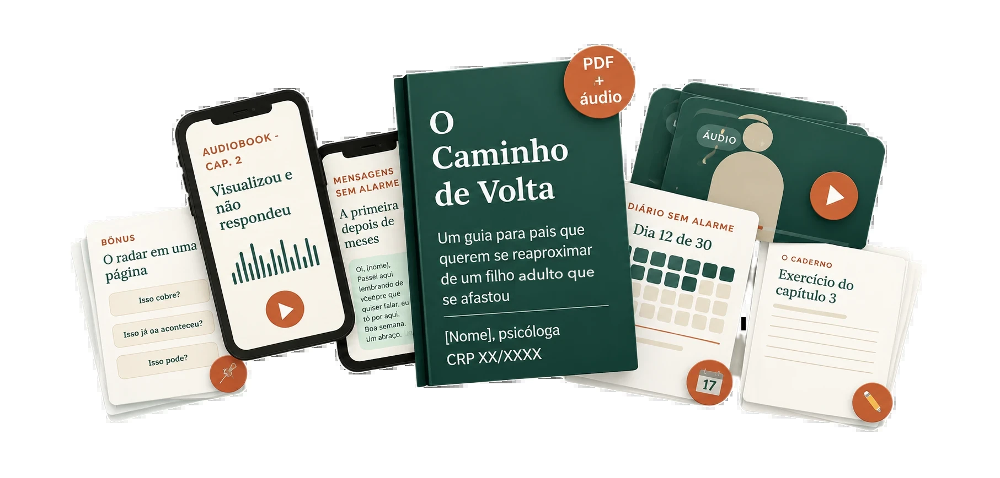

O seu resultado chegou
o seu caminho de volta ficou pronto.
Pelo que você contou, o afastamento da sua família é e você tem reagido como . Esta página mostra o que fazer com isso, começando hoje.
Pelo que você contou, o afastamento da sua família é e você tem reagido como . Esta página mostra o que fazer com isso, começando hoje.
Exemplo montado, com nome fictício, para mostrar a ideia do capítulo 6. Não é relato de leitor.
Cobra ("3 semanas"), aconselha ("não custa nada"), pede ("me liga"). O alarme dispara três vezes.
Não cobra, não aconselha, não pede. Chega como presença, e não como fatura.
Nenhuma mensagem garante resposta. O que muda é o que o seu filho encontra quando abre.
Psicóloga · CRP 10/432412
[Formação e anos de prática em [abordagem], só com títulos que ela de fato possui.]
[História de origem em primeira pessoa, a preencher após a entrevista: o momento em que ela entendeu, na própria vida, que um gesto de carinho pode chegar ao outro como cobrança.]
Nove materiais numa área só, com acesso por e-mail logo depois da confirmação.

12 capítulos em PDF com letra grande, para ler no celular, no tablet ou imprimir.
Narrado pela autora e dividido por capítulo, para ouvir no carro, na cozinha ou antes de dormir.
Um toque no play e o capítulo toca no celular. Nada para instalar, nada para enxergar.
30 mensagens prontas, uma para cada situação, com botão de copiar.
As três perguntas do radar e as 9 mensagens que disparam o alarme, numa página só.
Para colar na geladeira e olhar antes de mandar qualquer mensagem.
O resultado que você acabou de ler fica salvo na sua área, com os capítulos indicados para o seu tipo.
Refaça quando quiser: o afastamento muda, e o mapa acompanha.
Os exercícios dos 12 capítulos em páginas para imprimir e preencher.
Uma página por capítulo, para fazer o exercício à mão.
30 dias, uma página por dia: o que você teve vontade de mandar, o que sentiu, o que fez no lugar.
Cinco minutos por dia, para a mão aprender antes da cabeça.
Os 7 tipos de afastamento · Por que o que você tentou não funcionou · Quando a nora ou o genro está no meio.
Aulas curtas, dentro da área do livro, para assistir no seu ritmo e, se quiser, a dois.
Sete minutos com a autora e uma primeira ação que não depende de falar com o seu filho.
Nos 14 dias seguintes, e-mails curtos da autora acompanhando o começo.
Então o livro é para agora. Tudo o que ele ensina acontece do seu lado: entender o afastamento, parar o que está piorando e preparar o seu lado do caminho de volta. Nada disso depende de resposta.
O que o livro não promete: que o seu filho vai ligar, nem quando. Ninguém honesto promete isso.
Não precisa continuar assim. Não porque ele vai mudar, mas porque o seu lado pode mudar hoje, e é isso que está nas suas mãos.
Somados, os nove materiais chegam a R$ 497. Numa compra só, com tudo na mesma área:
De R$ 497por R$ 97
Pagamento único, no Pix ou em até 12x no cartão.
Quero começar O Caminho de VoltaPagamento e entrega pela Hotmart. O acesso chega no seu e-mail logo após a confirmação. No Pix, é na hora.
Não. O livro trabalha o que está do seu lado da relação. Tudo o que ele propõe pode ser feito sem que o seu filho saiba que você está lendo.
Serve, porque tudo acontece do seu lado. Há um capítulo sobre a distância e orientações para quando não há contato nenhum.
Quase tudo o que os pais tentam costuma passar pelo radar como cobrança ou pedido. O livro não propõe tentar mais. Propõe tentar diferente.
Não. É conteúdo educativo escrito por uma psicóloga, e não substitui acompanhamento psicológico. Em sofrimento intenso, o CVV atende no 188, 24 horas, de graça.
O livro vem com letra grande e com o audiobook completo, dividido por capítulo. Muita gente só ouve.
Por e-mail, logo após a confirmação do pagamento. No Pix, é na hora. Se o e-mail não aparecer, olhe na pasta de promoções ou de spam.
Sim. Você tem 30 dias a partir da compra para pedir o reembolso pela plataforma, sem precisar explicar o motivo.